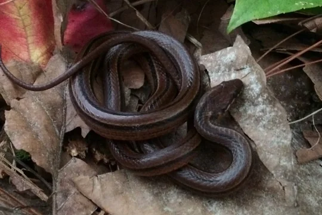
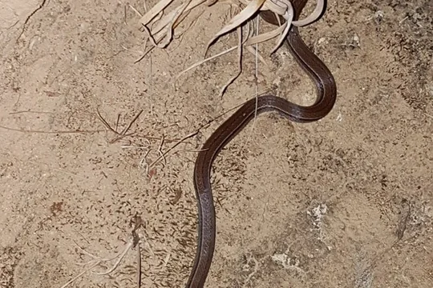
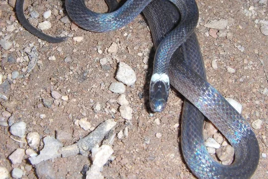
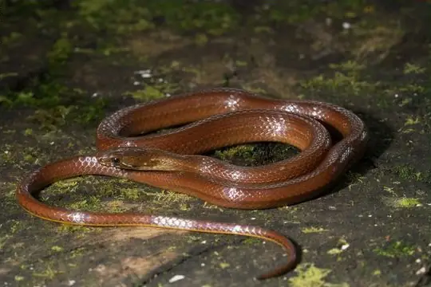
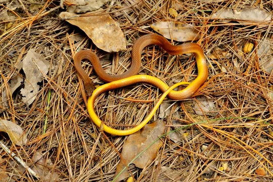
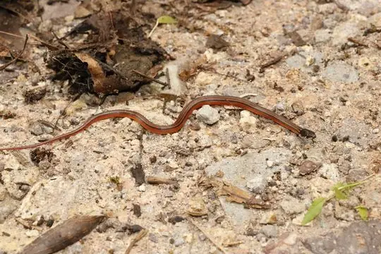
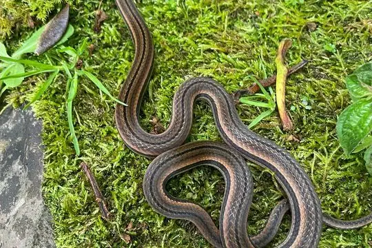
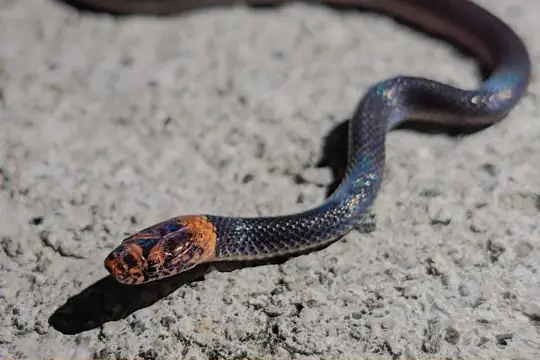
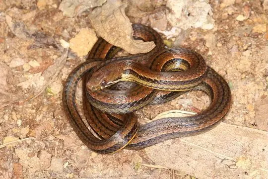
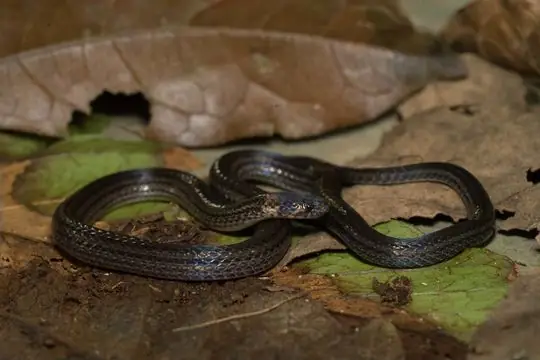

Rhadinella
The genus Rhadinella (family Colubridae) has 20 living species in SnakeList (none venomous), recorded in 7 countries.
- 20living species
- 20non-venomous
- 7countries
About the genus
A genus of the family Colubridae (colubrids).
Species
Showing 20 species
- No photo yetBrokencollar Graceful Brown SnakeRhadinella schistosa

Cusuco Graceful Brown SnakeRhadinella pegosalyta- No photo yetDonaji's Slender Leaflitter SnakeRhadinella donaji

Godman's Graceful Brown SnakeRhadinella godmani
Guerrero Slender Leaf Litter SnakeRhadinella dysmica- No photo yetHannstein's Spot-lipped SnakeRhadinella hannsteini

Hempstead's Pine Woods SnakeRhadinella hempsteadae
Kanalchutchan Graceful Brown SnakeRhadinella kanalchutchan
Kinkelin Graceful Brown SnakeRhadinella kinkelini Monte Cristi Graceful Brown SnakeRhadinella montecristi
Monte Cristi Graceful Brown SnakeRhadinella montecristi- No photo yetPosada's Graceful Brown SnakeRhadinella posadasi
- No photo yetStadelman's Pine Woods SnakeRhadinella stadelmani

Striped Litter SnakeRhadinella serperaster
Stuart's Graceful Brown SnakeRhadinella pilonaorum
Tearful Pine-Oak SnakeRhadinella lachrymans
Rhadinella anachoreta- No photo yetRhadinella lisyae
- No photo yetRhadinella rogerromani
- No photo yetRhadinella tolpanorum
 Rhadinella xerophila
Rhadinella xerophila
No snakes in Rhadinella match.
About the genus Rhadinella
- Distribution: living species recorded in 7 countries, on one continent: North America.
- Family: Colubridae.
- Countries and territories: Costa Rica, El Salvador, Guatemala, Honduras, Mexico, Nicaragua, Panama.
Compare its species
Its living species side by side. Lengths come only from SnakeList’s reviewed, sourced accounts; the others are left blank rather than guessed.
| Species | Venom | Recorded in | Adult length (reviewed accounts) |
|---|---|---|---|
| Brokencollar Graceful Brown Snake Rhadinella schistosa | Non-venomous | 1 country (North America) | No reviewed account yet |
| Cusuco Graceful Brown Snake Rhadinella pegosalyta | Non-venomous | 1 country (North America) | No reviewed account yet |
| Donaji's Slender Leaflitter Snake Rhadinella donaji | Non-venomous | 1 country (North America) | No reviewed account yet |
| Godman's Graceful Brown Snake Rhadinella godmani | Non-venomous | 7 countries (North America) | No reviewed account yet |
| Guerrero Slender Leaf Litter Snake Rhadinella dysmica | Non-venomous | 1 country (North America) | No reviewed account yet |
| Hannstein's Spot-lipped Snake Rhadinella hannsteini | Non-venomous | 2 countries (North America) | No reviewed account yet |
| Hempstead's Pine Woods Snake Rhadinella hempsteadae | Non-venomous | 2 countries (North America) | No reviewed account yet |
| Kanalchutchan Graceful Brown Snake Rhadinella kanalchutchan | Non-venomous | 1 country (North America) | No reviewed account yet |
| Kinkelin Graceful Brown Snake Rhadinella kinkelini | Non-venomous | 4 countries (North America) | No reviewed account yet |
| Monte Cristi Graceful Brown Snake Rhadinella montecristi | Non-venomous | 3 countries (North America) | No reviewed account yet |
| Posada's Graceful Brown Snake Rhadinella posadasi | Non-venomous | 2 countries (North America) | No reviewed account yet |
| Stadelman's Pine Woods Snake Rhadinella stadelmani | Non-venomous | 1 country (North America) | No reviewed account yet |
| Striped Litter Snake Rhadinella serperaster | Non-venomous | 1 country (North America) | No reviewed account yet |
| Stuart's Graceful Brown Snake Rhadinella pilonaorum | Non-venomous | 2 countries (North America) | No reviewed account yet |
| Tearful Pine-Oak Snake Rhadinella lachrymans | Non-venomous | 3 countries (North America) | No reviewed account yet |
| Rhadinella anachoreta | Non-venomous | 2 countries (North America) | No reviewed account yet |
| Rhadinella lisyae | Non-venomous | 1 country (North America) | No reviewed account yet |
| Rhadinella rogerromani | Non-venomous | 1 country (North America) | No reviewed account yet |
| Rhadinella tolpanorum | Non-venomous | 1 country (North America) | No reviewed account yet |
| Rhadinella xerophila | Non-venomous | 1 country (North America) | No reviewed account yet |